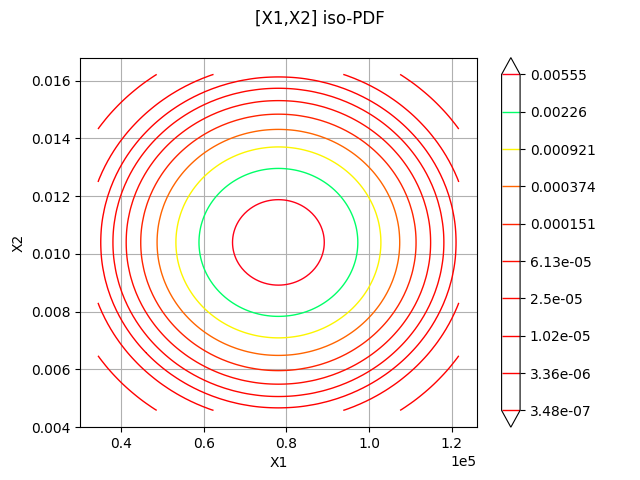
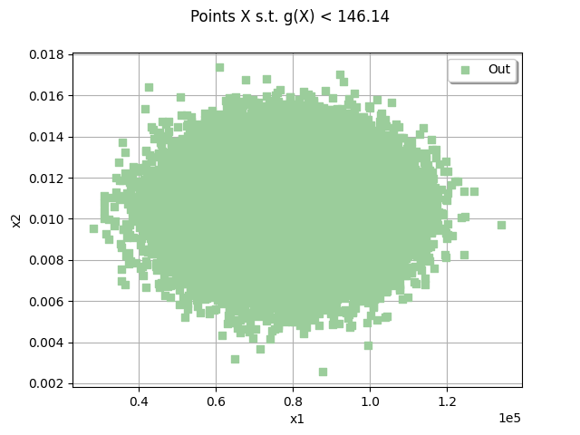
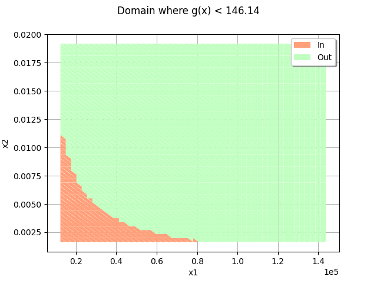
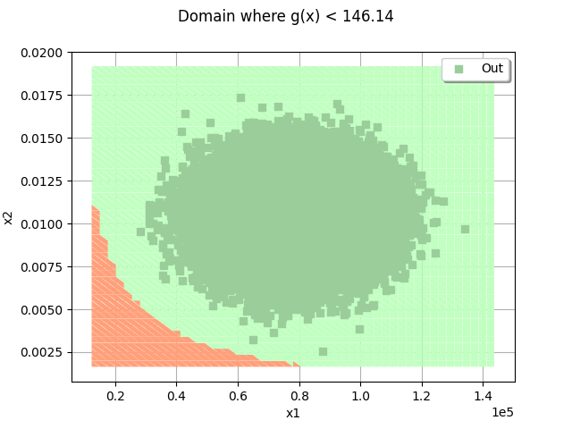

Note
Go to the end to download the full example code.
RP28 analysis and 2D graphics¶
The objective of this example is to present problem 28 of the BBRC. We also present graphic elements for the visualization of the limit state surface in 2 dimensions.
import openturns as ot
import openturns.viewer as otv
import otbenchmark as otb
problem = otb.ReliabilityProblem28()
print(problem)
name = RP28
event = class=ThresholdEventImplementation antecedent=class=CompositeRandomVector function=class=Function name=Unnamed implementation=class=FunctionImplementation name=Unnamed description=[x1,x2,y0] evaluationImplementation=class=SymbolicEvaluation name=Unnamed inputVariablesNames=[x1,x2] outputVariablesNames=[y0] formulas=[x1 * x2] gradientImplementation=class=SymbolicGradient name=Unnamed evaluation=class=SymbolicEvaluation name=Unnamed inputVariablesNames=[x1,x2] outputVariablesNames=[y0] formulas=[x1 * x2] hessianImplementation=class=SymbolicHessian name=Unnamed evaluation=class=SymbolicEvaluation name=Unnamed inputVariablesNames=[x1,x2] outputVariablesNames=[y0] formulas=[x1 * x2] antecedent=class=UsualRandomVector distribution=class=JointDistribution name=JointDistribution dimension=2 copula=class=IndependentCopula name=IndependentCopula dimension=2 marginal[0]=class=Normal name=Normal dimension=1 mean=class=Point name=Unnamed dimension=1 values=[78064] sigma=class=Point name=Unnamed dimension=1 values=[11710] correlationMatrix=class=CorrelationMatrix dimension=1 implementation=class=MatrixImplementation name=Unnamed rows=1 columns=1 values=[1] marginal[1]=class=Normal name=Normal dimension=1 mean=class=Point name=Unnamed dimension=1 values=[0.0104] sigma=class=Point name=Unnamed dimension=1 values=[0.00156] correlationMatrix=class=CorrelationMatrix dimension=1 implementation=class=MatrixImplementation name=Unnamed rows=1 columns=1 values=[1] operator=class=Less name=Unnamed threshold=146.14
probability = 1.4532945550025393e-07
event = problem.getEvent()
g = event.getFunction()
problem.getProbability()
1.4532945550025393e-07
Create the Monte-Carlo algorithm
algoProb = ot.ProbabilitySimulationAlgorithm(event)
algoProb.setMaximumOuterSampling(10000)
algoProb.setBlockSize(128)
algoProb.setMaximumCoefficientOfVariation(0.01)
algoProb.run()
Get the results
resultAlgo = algoProb.getResult()
neval = g.getEvaluationCallsNumber()
print("Number of function calls = %d" % (neval))
pf = resultAlgo.getProbabilityEstimate()
print("Failure Probability = %.4f (* 1.e-7)" % (pf * 1.0e7))
level = 0.95
c95 = resultAlgo.getConfidenceLength(level)
pmin = pf - 0.5 * c95
pmax = pf + 0.5 * c95
print(
"%.1f %% confidence interval :[%.4f,%.4f] * 1.e-7 "
% (level * 100, pmin * 1.0e7, pmax * 1.0e7)
)
Number of function calls = 1280000
Failure Probability = 0.0000 (* 1.e-7)
95.0 % confidence interval :[0.0000,0.0000] * 1.e-7
Compute the bounds of the domain¶
inputVector = event.getAntecedent()
distribution = inputVector.getDistribution()
X1 = distribution.getMarginal(0)
X2 = distribution.getMarginal(1)
alphaMin = 1.0e-8
alphaMax = 1.0 - alphaMin
lowerBound = ot.Point(
[X1.computeQuantile(alphaMin)[0], X2.computeQuantile(alphaMin)[0]]
)
upperBound = ot.Point(
[X1.computeQuantile(alphaMax)[0], X2.computeQuantile(alphaMax)[0]]
)
nbPoints = [100, 100]
figure = g.draw(lowerBound, upperBound, nbPoints)
figure.setTitle(" Iso-values of limit state function")
figure
class=Graph name=y0 as a function of (x1,x2) implementation=class=GraphImplementation name=y0 as a function of (x1,x2) title= Iso-values of limit state function xTitle=x1 yTitle=x2 axes=ON grid=ON legendposition=upper left legendFontSize=1 drawables=[class=Drawable name=Unnamed implementation=class=Contour name=Unnamed x=class=Sample name=Unnamed implementation=class=SampleImplementation name=Unnamed size=100 dimension=1 data=[[12347.5],[13675.1],[15002.7],[16330.3],[17657.9],[18985.5],[20313.1],[21640.7],[22968.3],[24295.9],[25623.5],[26951.1],[28278.7],[29606.4],[30934],[32261.6],[33589.2],[34916.8],[36244.4],[37572],[38899.6],[40227.2],[41554.8],[42882.4],[44210],[45537.6],[46865.2],[48192.8],[49520.5],[50848.1],[52175.7],[53503.3],[54830.9],[56158.5],[57486.1],[58813.7],[60141.3],[61468.9],[62796.5],[64124.1],[65451.7],[66779.3],[68106.9],[69434.6],[70762.2],[72089.8],[73417.4],[74745],[76072.6],[77400.2],[78727.8],[80055.4],[81383],[82710.6],[84038.2],[85365.8],[86693.4],[88021.1],[89348.7],[90676.3],[92003.9],[93331.5],[94659.1],[95986.7],[97314.3],[98641.9],[99969.5],[101297],[102625],[103952],[105280],[106608],[107935],[109263],[110590],[111918],[113246],[114573],[115901],[117228],[118556],[119884],[121211],[122539],[123866],[125194],[126522],[127849],[129177],[130504],[131832],[133160],[134487],[135815],[137143],[138470],[139798],[141125],[142453],[143781]] y=class=Sample name=Unnamed implementation=class=SampleImplementation name=Unnamed size=100 dimension=1 data=[[0.00164528],[0.00182214],[0.001999],[0.00217587],[0.00235273],[0.00252959],[0.00270646],[0.00288332],[0.00306018],[0.00323705],[0.00341391],[0.00359077],[0.00376763],[0.0039445],[0.00412136],[0.00429822],[0.00447509],[0.00465195],[0.00482881],[0.00500568],[0.00518254],[0.0053594],[0.00553627],[0.00571313],[0.00588999],[0.00606685],[0.00624372],[0.00642058],[0.00659744],[0.00677431],[0.00695117],[0.00712803],[0.0073049],[0.00748176],[0.00765862],[0.00783549],[0.00801235],[0.00818921],[0.00836607],[0.00854294],[0.0087198],[0.00889666],[0.00907353],[0.00925039],[0.00942725],[0.00960412],[0.00978098],[0.00995784],[0.0101347],[0.0103116],[0.0104884],[0.0106653],[0.0108422],[0.011019],[0.0111959],[0.0113727],[0.0115496],[0.0117265],[0.0119033],[0.0120802],[0.0122571],[0.0124339],[0.0126108],[0.0127877],[0.0129645],[0.0131414],[0.0133182],[0.0134951],[0.013672],[0.0138488],[0.0140257],[0.0142026],[0.0143794],[0.0145563],[0.0147331],[0.01491],[0.0150869],[0.0152637],[0.0154406],[0.0156175],[0.0157943],[0.0159712],[0.016148],[0.0163249],[0.0165018],[0.0166786],[0.0168555],[0.0170324],[0.0172092],[0.0173861],[0.017563],[0.0177398],[0.0179167],[0.0180935],[0.0182704],[0.0184473],[0.0186241],[0.018801],[0.0189779],[0.0191547]] levels=class=Point name=Unnamed dimension=10 values=[116.403,222.633,322.994,440.998,580.019,742.567,938.836,1182.22,1505.14,2015.06] labels=[116.403,222.633,322.994,440.998,580.019,742.567,938.836,1182.22,1505.14,2015.06] show labels=false isFilled=false colorBarPosition=right isVminUsed=false vmin=0 isVmaxUsed=false vmax=0 colorMap=hsv alpha=1 norm=linear extend=both hatches=[] derived from class=DrawableImplementation name=Unnamed legend= data=class=Sample name=Unnamed implementation=class=SampleImplementation name=Unnamed size=10000 dimension=1 description=[y0] data=[[20.315],[22.4993],[24.6836],...,[2703.22],[2728.65],[2754.08]] color=#1f77b4 isColorExplicitlySet=true fillStyle=solid lineStyle=solid pointStyle=plus lineWidth=1]
Print the iso-values of the distribution¶
_ = otv.View(distribution.drawPDF())

sampleSize = 100000
drawEvent = otb.DrawEvent(event)
cloud = drawEvent.drawSampleCrossCut(sampleSize)
_ = otv.View(cloud)

Draw the limit state surface¶
bounds = ot.Interval(lowerBound, upperBound)
graph = drawEvent.drawLimitStateCrossCut(bounds)
graph.add(cloud)
graph
class=Graph name=Limit state surface implementation=class=GraphImplementation name=Limit state surface title=Limit state surface xTitle=x1 yTitle=x2 axes=ON grid=ON legendposition= legendFontSize=1 drawables=[class=Drawable name=Unnamed implementation=class=Contour name=Unnamed x=class=Sample name=Unnamed implementation=class=SampleImplementation name=Unnamed size=52 dimension=1 description=[t] data=[[12347.5],[14924.6],[17501.7],[20078.8],[22655.9],[25233.1],[27810.2],[30387.3],[32964.4],[35541.5],[38118.7],[40695.8],[43272.9],[45850],[48427.1],[51004.3],[53581.4],[56158.5],[58735.6],[61312.7],[63889.8],[66467],[69044.1],[71621.2],[74198.3],[76775.4],[79352.6],[81929.7],[84506.8],[87083.9],[89661],[92238.2],[94815.3],[97392.4],[99969.5],[102547],[105124],[107701],[110278],[112855],[115432],[118009],[120586],[123164],[125741],[128318],[130895],[133472],[136049],[138626],[141203],[143781]] y=class=Sample name=Unnamed implementation=class=SampleImplementation name=Unnamed size=52 dimension=1 description=[t] data=[[0.00164528],[0.0019886],[0.00233192],[0.00267525],[0.00301857],[0.00336189],[0.00370521],[0.00404854],[0.00439186],[0.00473518],[0.0050785],[0.00542182],[0.00576515],[0.00610847],[0.00645179],[0.00679511],[0.00713844],[0.00748176],[0.00782508],[0.0081684],[0.00851173],[0.00885505],[0.00919837],[0.00954169],[0.00988502],[0.0102283],[0.0105717],[0.010915],[0.0112583],[0.0116016],[0.011945],[0.0122883],[0.0126316],[0.0129749],[0.0133182],[0.0136616],[0.0140049],[0.0143482],[0.0146915],[0.0150349],[0.0153782],[0.0157215],[0.0160648],[0.0164081],[0.0167515],[0.0170948],[0.0174381],[0.0177814],[0.0181248],[0.0184681],[0.0188114],[0.0191547]] levels=class=Point name=Unnamed dimension=1 values=[146.14] labels=[146.14] show labels=true isFilled=false colorBarPosition=right isVminUsed=false vmin=0 isVmaxUsed=false vmax=0 colorMap=hsv alpha=1 norm=linear extend=both hatches=[] derived from class=DrawableImplementation name=Unnamed legend= data=class=Sample name=Unnamed implementation=class=SampleImplementation name=Unnamed size=2704 dimension=1 description=[y0] data=[[20.315],[24.5551],[28.7952],...,[2655.35],[2704.71],[2754.08]] color=#1f77b4 isColorExplicitlySet=true fillStyle=solid lineStyle=solid pointStyle=plus lineWidth=1,class=Drawable name=Out implementation=class=Cloud name=Out derived from class=DrawableImplementation name=Out legend=Out data=class=Sample name=Unnamed implementation=class=SampleImplementation name=Unnamed size=100000 dimension=2 data=[[72208.2,0.0105646],[64613.2,0.0104465],[81360.4,0.0103678],...,[76843,0.0107756],[89385.9,0.0125662],[76617.1,0.0125877]] color=darkseagreen3 isColorExplicitlySet=true fillStyle=solid lineStyle=solid pointStyle=fsquare lineWidth=1]
domain = drawEvent.fillEventCrossCut(bounds)
_ = otv.View(domain)

domain.add(cloud)
_ = otv.View(domain)

otv.View.ShowAll()
Total running time of the script: (0 minutes 3.622 seconds)